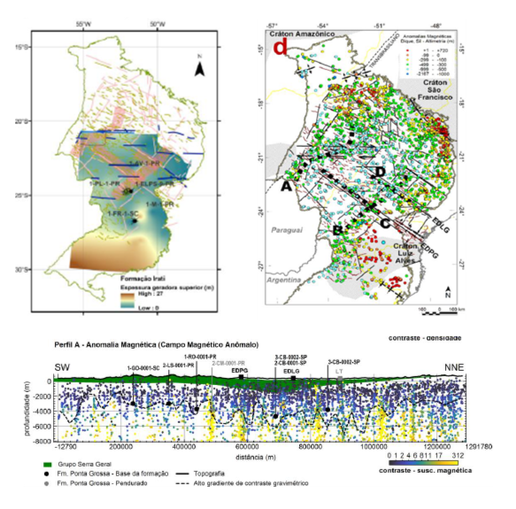

Cap 7 - 7. CONTRIBUIÇÃO AOS ESTUDOS GEOFÍSICOS DAS BACIAS TERRRESTRES INTERIORES In: Avaliação do potencial de geração de hidrocarbonetos em áreas de bacias sedimentares terrestres.

Resumo em Português
Este Relatório desenvolve-se no âmbito do Subcomitê 3 (SCT3), constituído pelo comitê do Programa de Revitalização das Atividades de Exploração e Produção de Petróleo e Gás Natural em Áreas Terrestres - REATE 2020. O Subcomitê 3 (SCT3) trata do potencial de óleo e gás em bacias sedimentares terrestres foi instituído com o objetivo de estruturar estudos do potencial de óleo e gás natural nessas áreas. Epecificamente como contribuição aos estudos geofísicos, o SCT3 avançou na aplicação de dados magnetométricos para realçar feições ou áreas de interesse prospectivo para hidrocarbonetos nas bacias do Paraná e do Parnaíba, alcançando resultados inéditos. Uma vasta quantidade de mapas e análises são disponibilizados enriquecendo as fontes bibliográficas e reduzindo a assimetria de informações sobre essas bacias. Todos os dados utilizados e os resultados gerados são disponibilizados em uma base de dados georreferenciada (https://www.epe.gov.br/pt/publicacoes-dados-abertos/publicacoes/reate2020-sct3-avaliacao-do-potencial-de-geracao-de-hidrocarbonetos-em-areas-de-bacias-sedimentares-terrestres)